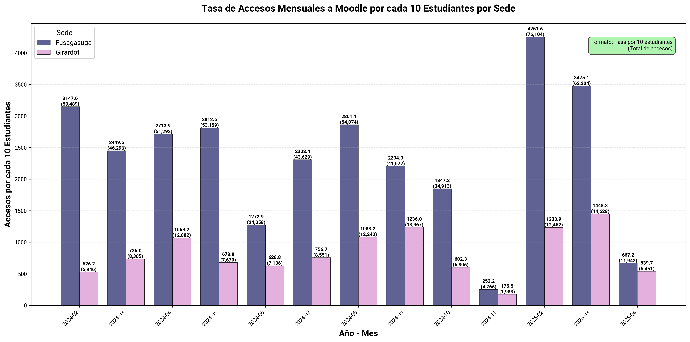
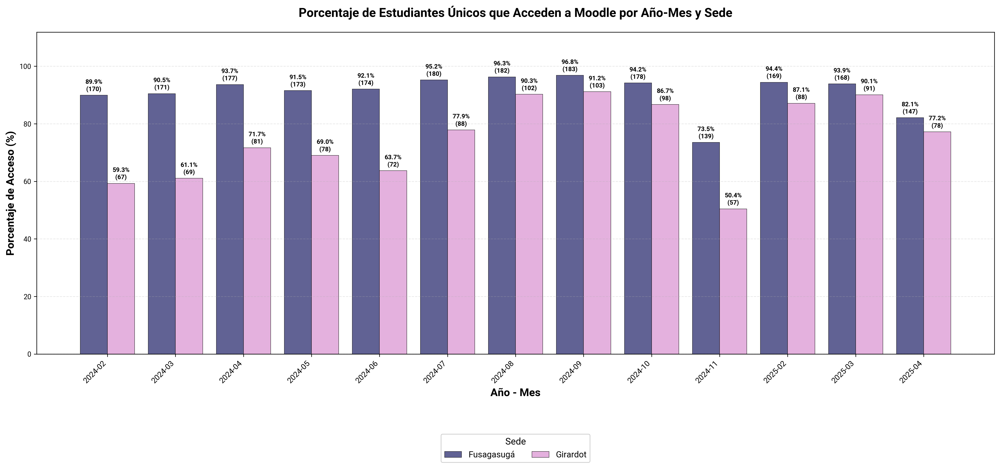
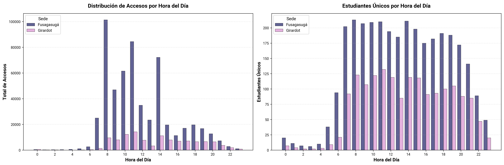
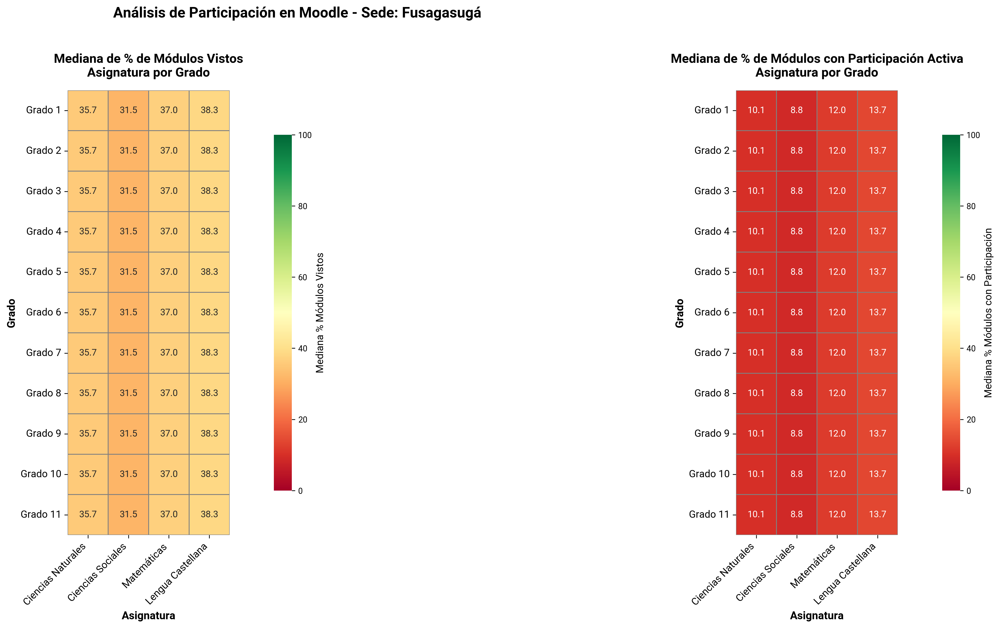
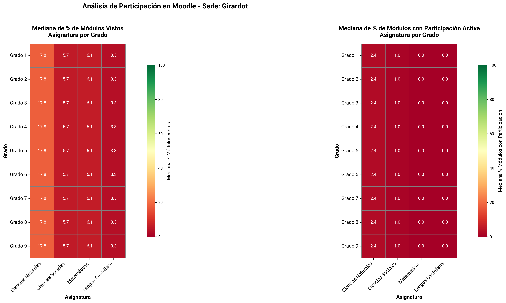
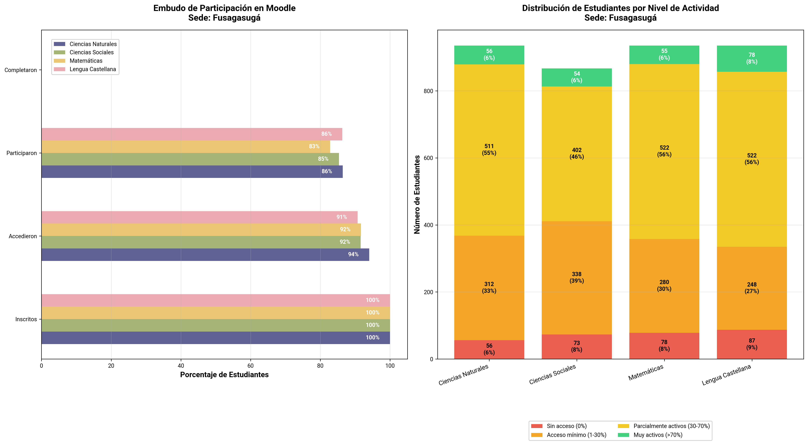
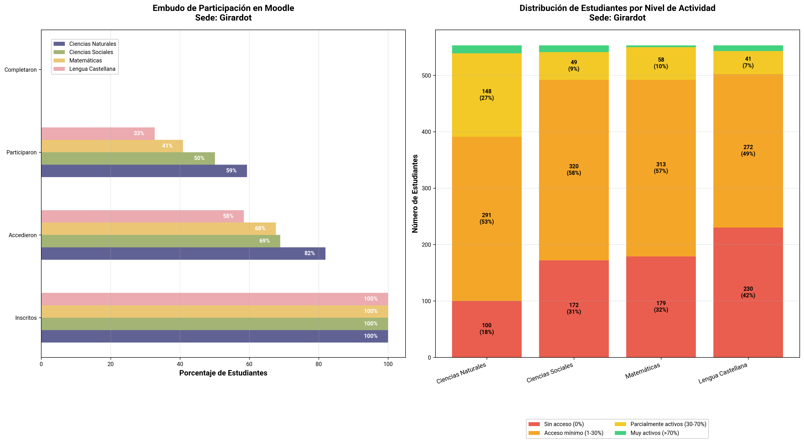
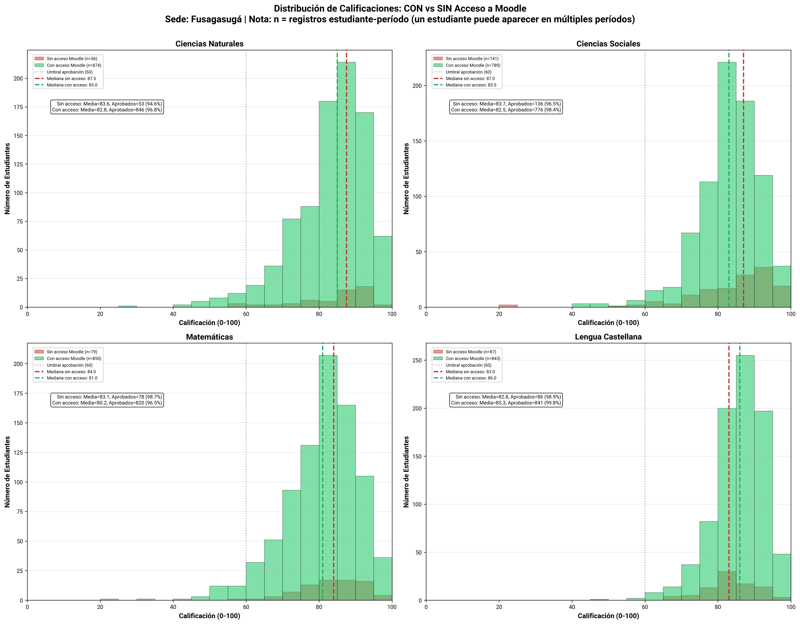
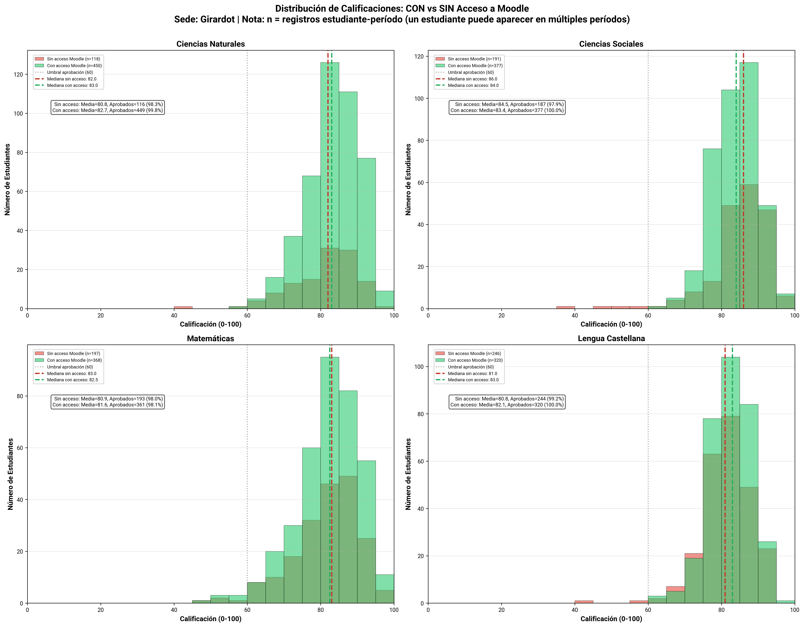

Análisis de Comportamiento en Moodle#
Resumen#
Este análisis explora el comportamiento de 357 estudiantes únicos en la plataforma Moodle, abarcando 261 cursos desde 2024-1 hasta 2025-1
Asignaturas principales: Matemáticas, Lenguaje, Ciencias Naturales, Ciencias Sociales
1. Tasa de Accesos Mensuales por Sede#
Visualización#

Descripción#
Este gráfico muestra la tasa de accesos a Moodle normalizada por cada 10 estudiantes inscritos, permitiendo una comparación entre sedes con diferente cantidad de estudiantes.
Interpretación#
Formato de etiquetas: Cada barra muestra:
Número superior: Tasa normalizada (accesos/10 estudiantes)
Número entre paréntesis: Total de accesos absolutos
Tasa alta (>100): Indica que, en promedio, cada estudiante accede más de 10 veces al mes a la plataforma.
Tasa baja (<50): Sugiere uso limitado de Moodle.
Variabilidad mensual: Picos pueden correlacionarse con evaluaciones o inicio/fin de períodos académicos.
Conclusiones#
La caída abrupta en junio y noviembre podría estar asociada al fin del periodo académico y vacaciones.
Fusagasugá mantiene un uso sostenido, mientras que Girardot presenta actividad a más baja escala.
En Fusagasugá se observan picos de accesos en el primer mes del año, pero no en Girardot lo que puede indicar estrategias distintas y menor sincronía entre el calendario escolar y el uso de Moodle.
2. Porcentaje de Estudiantes Activos por Mes#
Visualización#

Descripción#
Muestra el porcentaje de estudiantes inscritos que accedieron al menos una vez a Moodle en cada mes, por sede.
Interpretación#
Formato de etiquetas: Cada barra muestra:
Porcentaje (%): Proporción de estudiantes que accedieron
Número entre paréntesis: Cantidad absoluta de estudiantes únicos
Umbral de participación: Se considera que un estudiante «accedió» si tiene al menos 1 registro de actividad en el mes.
>80%: Excelente nivel de adopción, la mayoría de estudiantes usa la plataforma.
60-80%: Buena adopción.
<60%: Señal de alerta, una porción significativa de estudiantes no usa Moodle.
Conclusiones#
La gran mayoría de los estudiantes en Fusagasugá entra al menos una vez al mes, lo que sugiere que Moodle está incorporado en la rutina académica.
En Girardot el acceso parece más episódico, reflejando un uso vinculado a momentos específicos más que a una práctica estable.
3. Patrones de Acceso por Hora#
Visualización#

Descripción#
Análisis de la distribución de accesos y estudiantes únicos por hora del día (hora de Bogotá, UTC-5).
Interpretación#
Gráfico izquierdo: Total de accesos por hora del día.
Gráfico derecho: Número de estudiantes únicos activos por hora.
Conclusiones#
En ambas sedes, la mayor actividad ocurre entre las 7:00 a.m. y las 3:00 p.m., lo que indica que el uso de Moodle está integrado en la jornada escolar.
Después de esa franja, la interacción cae drásticamente, lo que sugiere bajo uso autónomo fuera del horario de clases.
Fusagasugá muestra un volumen de accesos significativamente superior durante todo el día, además de una curva más sostenida y diversificada, con picos regulares entre las 8:00 y las 14:00 h.
En Girardot, la distribución horaria replica la tendencia general, pero con una menor magnitud y continuidad de accesos.
4. Mapas de Calor: Participación por Asignatura y Grado#
Visualizaciones#
Sede: Fusagasugá#

Sede: Girardot#

Descripción#
Los mapas de calor muestran dos métricas de engagement en Moodle:
% de Módulos Vistos (Mediana): Porcentaje de módulos del curso que los estudiantes visualizaron al menos una vez.
% de Módulos con Participación (Mediana): Porcentaje de módulos donde los estudiantes realizaron actividades interactivas (no solo visualización).
Interpretación#
Métrica: Se usa la mediana para evitar el sesgo de valores extremos.
Ejes:
Horizontal: Asignaturas básicas (Matemáticas, Lenguaje, Ciencias Naturales, Ciencias Sociales)
Vertical: Grados (1° a 11°)
Escala de colores:
🟢 Verde (>70%): Alta participación
🟡 Amarillo (40-70%): Participación moderada
🔴 Rojo (<40%): Baja participación (señal de alerta)
Conclusiones#
Fusagasugá:
No se identifican grados con un problema particular, ya que la baja participación es generalizada.
Girardot:
La participación activa es extremadamente baja en todos los grados, con medianas entre 0 % y 2,4 %.
En términos comparativos, Girardot muestra una menor participación que Fusagasugá, indicando posibles diferencias en el uso de Moodle.
No hay una asignatura con buena participación, sino una tendencia global de interacción mínima en Moodle.
El contraste entre módulos “vistos” y módulos “participados” evidencia que los estudiantes acceden pero no interactúan, lo que apunta a posibles problemas en el diseño de actividades o en la motivación para usar Moodle más allá de la consulta de materiales.
5. Diagnóstico de Participación#
Visualizaciones#
Sede: Fusagasugá#

Sede: Girardot#

Interpretación#
Embudo de Participación (Izquierda)#
Muestra las 4 etapas del proceso de engagement en Moodle:
Inscritos (100%): Todos los estudiantes matriculados en el curso
Accedieron: Estudiantes que entraron a Moodle al menos 1 vez
Participaron: Estudiantes que realizaron actividades interactivas
Completaron: Estudiantes que visualizaron todos los módulos del curso
Distribución por Nivel de Actividad (Derecha)#
Segmenta a los estudiantes en 4 categorías:
🔴 Sin acceso (0%): Nunca entraron a un módulo de Moodle
🟠 Acceso mínimo (1-30%): Visualizaron menos del 30% de los módulos
🟡 Parcialmente activos (30-70%): Engagement moderado
🟢 Muy activos (>70%): Alta participación en el curso
Nota: El número de estudiantes representa inscripciones estudiante-período. Un estudiante inscrito en 4 períodos cuenta como 4 estudiantes en la gráfica.
Conclusiones#
Fusagasugá:
Aunque los tres primeros niveles del embudo (inscritos, accedieron, participaron) muestran porcentajes altos y cercanos entre sí (≈85–95 %), el nivel “Completaron” no tiene datos.
Predominan los estudiantes parcialmente activos (30–70 %), seguidos de un grupo numeroso con acceso mínimo (1–30 %).
Solo entre 6 % y 9 % son muy activos, un grupo pequeño pero consistente.
Girardot:
Aquí también el nivel de “Completaron” está vacío, pero además se observa una caída más pronunciada entre “Accedieron” y “Participaron”.
Esto revela que, aunque un porcentaje relevante accede a la plataforma (≈60–70 %), solo la mitad o menos participa.
La mayoría está en las categorías de acceso mínimo o parcial, pero con una proporción elevada de estudiantes sin acceso (18–42 %), sobre todo en Lengua Castellana
En ambas sedes, la ausencia de datos de “completaron” indica una limitación del seguimiento en Moodle.
Girardot requiere acciones de acompañamiento o refuerzo para transformar el acceso inicial en participación efectiva.
6. Calificaciones: Con vs Sin Acceso a Moodle#
Visualizaciones#
Sede: Fusagasugá#

Sede: Girardot#

Descripción#
Comparación de la distribución de calificaciones finales (escala 0-100) entre dos grupos de estudiantes:
🔴 Sin acceso a Moodle: Estudiantes que NO visualizaron ningún módulo
🟢 Con acceso a Moodle: Estudiantes que visualizaron al menos 1 módulo
Interpretación#
Escala: Calificaciones de 0 a 100 puntos.
Umbral de aprobación: Línea punteada gris a los 60 puntos.
Líneas de mediana:
🔴 Roja (sin acceso)
🟢 Verde (con acceso)
Estadísticas incluidas:
Media de calificaciones
Número y porcentaje de estudiantes aprobados
Nota importante:
n = registros estudiante-período(un mismo estudiante puede aparecer en múltiples períodos).
Si la mediana VERDE está a la derecha de la ROJA:#
Impacto positivo de Moodle: Los estudiantes que usan la plataforma tienen mejores calificaciones.
Evidencia de correlación entre uso de Moodle y desempeño académico.
Si ambas medianas están cerca:#
Moodle no marca diferencia: El uso de la plataforma no se refleja en mejores notas.
Si hay muchos estudiantes SIN acceso con notas altas:#
Los buenos estudiantes pueden aprobar sin Moodle.
Moodle no es percibido como necesario para el éxito académico.
Si hay muchos estudiantes CON acceso con notas bajas:#
Acceder a Moodle no garantiza el éxito.
Conclusiones#
Fusagasugá:
En todas las asignaturas, la línea verde (con acceso a Moodle) está ligeramente a la derecha de la línea roja (sin acceso), lo que indica un impacto positivo moderado del uso de Moodle en las calificaciones.
Los estudiantes que accedieron a Moodle tienden a obtener calificaciones ligeramente más altas.
La diferencia no es drástica, pero sí consistente entre materias.
Girardot:
Aquí, las líneas verde y roja están casi superpuestas, lo que muestra que el uso de Moodle no mejora sustancialmente las calificaciones
Moodle parece tener baja incidencia en el desempeño académico.
Las calificaciones promedio y medianas son casi idénticas con y sin acceso.